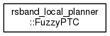
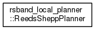
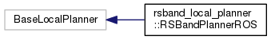

Main Page
Namespaces
Classes
Files
Class List
Class Hierarchy
Class Members
Class Hierarchy
Go to the textual class hierarchy



rsband_local_planner
Author(s): George Kouros
autogenerated on Sun Jul 31 2016 17:15:47